Accés a bases de dades amb MySQL¶
1.Estats en l’execució de sentències SQL
2.Paràmetres de configuració de la connexió
3.Realització i comprovació de la connexió
4.Inserció, modificació i eliminació de dades
6.Desconnexió de la base de dades
7.Gestió i control d’errors i obtenció d’informació
8.Consideracions generals i bones pràctiques
9.Annex: codi emprat als exemples
10.Manuals i fonts d’informació addicionals
Introducció¶
L’accés a una base de dades des d’un llenguatge de programació és la base de gairebé tots els sistemes de gestió de l’actualitat. En aquests casos, la gestió de la informació es fa a través d’un programa que accedeix a la base de dades per a poder executar les funcionalitats requerides.
En aquest mòdul veurem com accedir a una base de dades MySQL des d’un programa PHP. En particular, farem la connexió via PDO MySQL.
Per a realitzar la gestió de la base de dades emmagatzemada en un servidor MySQL a través de codi escrit en PHP, es farà servir l’extensió mysqli de PHP. Aquesta extensió del llenguatge PHP consta d’una sèrie de funcionalitats extres que milloren les extensions mysql que es feien servir en versions de MySQL anteriors a la 4.1.3. Aquesta extensió ja ve inclosa a les versions de PHP5 i posteriors. Entre les millores més importants destaquen la interfície orientada a objectes o el suport per a transaccions.
Connectors de programes amb bases de dades
Existeixen diversos sistemes per a interconnectar el codi dels programes amb les bases de dades, coneguts com a connectors. Aquests són alguns:
PDO (PHP Data Objects) per a connectar PHP amb diferents SGBDs
ADO: (ActiveX Data Objects) de Microsoft
JDBC (Java DataBase Connectivity) per interconnexió del llenguatge Java amb bases de dades.
PDO MySQL
El connector PDO MySQL s’instal·la amb WAMP i és totalment transparent a l’usuari.
1.Estats en l’execució de sentències SQL¶
A l’hora d’accedir i manipular les dades d’una base de dades des de qualsevol programa, a part d’executar la sentència d’accés o manipulació de dades, caldrà passar per una sèrie d’estats, independentment del llenguatge de programació i del SGBD que es faci servir. Aquests estats són necessaris per tal d’accedir a la base de dades (el que s’anomena connectar-se a la base de dades), analitzar com ha anat l’operació SQL i tancar la connexió amb la base de dades.
Aquests estats es poden veure en el següent diagrama pel cas d’exemple d’una operació de SELECT:
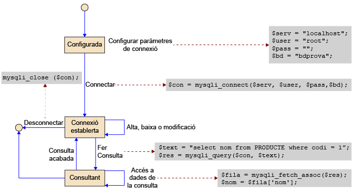
El primer que cal fer per a poder accedir a una base de dades emmagatzemada a un servidor de bases de dades, és configurar els paràmetres de connexió, amb dades com el nom de la base de dades, la seva ubicació i les credencials d’accés de l’usuari que vol connectar.
Una vegada configurada la connexió, cal executar una instrucció, connectar, per a fer efectiva aquesta connexió. Si els paràmetres proporcionats són correctes i el servidor de bases de dades està disponible, s’establirà la connexió entre el programa i la base de dades. Cal tenir en compte que la connexió pot no establir-se per diferents motius. Per tant, serà important assegurar-se que tot ha anat bé després d’executar la instrucció de connectar.
La connexió a la base de dades estarà oberta fins que el programa finalitzi la seva execució. Per tal d’assegurar-se que els recursos utilitzats són alliberats, és important tancar la connexió un cop ja no s’hagin de fer més accessos a la base de dades. Per a fer-ho existeix una acció de desconnectar.
Quan la connexió està establerta, es poden realitzar diferents accions sobre la base de dades. Tres d’aquestes accions tenen un efecte immediat; s’executa l’acció sobre la base de dades i es genera un resultat. Aquestes accions són:
- Donar d’alta noves dades: es poden inserir noves dades a les taules de la base de dades. Si la sentència SQL d’inserció s’executa correctament (sense errors), la inserció es fa efectiva immediatament.
- Donar de baixa dades: es poden eliminar dades de la base de dades mitjançant una sentència SQL. Aquesta acció comporta una eliminació d’informació, amb el que cal assegurar-se que s’elimina la informació que realment es vol eliminar. En els sistemes transaccionals, existeix el concepte de transacció, on un conjunt d’instruccions s’executen com si fossin una sola instrucció. Si es fan servir les transaccions, es pot desfer una eliminació de dades (amb la instrucció rollback), però només en el cas que la transacció no s’hagi donat per finalitzada amb èxit. D’altra banda, és important realitzar còpies de seguretat per a poder recuperar, en cas d’eliminacions errònies, les dades anteriors de la darrera còpia de seguretat.
- Modificar les dades de la base de dades: una modificació és el fet de canviar una dada que ja està inserida a la base de dades per tal d’actualitzar-la o corregir-la. La modificació també elimina informació, ja que en modificar una dada, el valor anterior al que s’ha modificat, es perd. S’ha d’assegurar que la dada que es vol modificar serà l’única que es modificarà, i que la instrucció no afectarà altres dades. Com en el cas anterior, en fer servir transaccions, hi ha la possibilitat de revertir la instrucció de modificació (sempre que es faci rollback abans d’acabar la transacció).
La quarta de les accions que es pot fer una vegada establerta la connexió és la consulta de dades. Aquesta acció és una mica diferent, ja que els resultats d’una consulta poden contenir molts elements que s’han de tractar per blocs (es pot pensar en una llista de productes d’una botiga que es presenten de 20 en 20, per exemple). Per aquest motiu, la consulta no és una acció immediata com les anteriors, sinó que la seva execució genera una connexió amb la base de dades, que té un estat i que permet anar consultant les dades de mica en mica. Més concretament, el que passa en fer una consulta és el següent:
- Obrir la consulta: s’executa una sentència SQL de consulta sobre la base de dades. Si no hi ha cap error s’obtenen les dades de la base de dades. Llavors, ja es poden obtenir les dades pel seu tractament.
- Accés a dades de la consulta: es consulten les dades resultants de la consulta. Mentre s’està realitzant una consulta (fins que no es tanqui la consulta), l’única acció que pot fer el programa amb la connexió a la base de dades és obtenir més dades de la consulta realitzada. No es pot ni inserir, ni modificar, ni eliminar dades.
- Tancar la consulta: una vegada el programa (o l’usuari) han acabat el tractament de les dades o s’han obtingut totes les dades, cal donar per finalitzada la consulta. Això permetrà tornar a l’estat de “connexió establerta” i poder executar noves operacions SQL sobre la base de dades. A aquesta acció també se l’anomena Tancar la consulta.
Exemple de modificació de dades
Es pot imaginar el cas de voler modificar el preu d’un producte de 2 € a 1 €, fer-ho malament i acabant modificant TOTS els preus de la botiga a 1 €. Com es recuperen els anteriors preus de tots els productes afectats? Si s’ha fet servir el sistema de transaccions, es pot fer un rollback. Si no, amb una còpia de seguretat anterior.
1.1.Transaccions¶
El concepte de transacció es fa servir quan es vol executar un conjunt d’instruccions SQL amb la característica que s’han d’executar totes les instruccions del conjunt, i si no es pot, no se n’ha d’executar cap.
Una transacció comença amb una instrucció (Begin, Begin transaction o Start transaction, depenent del sistema gestor de bases de dades que es faci servir), continua amb totes les instruccions que s’han d’executar, i pot acabar de dues maneres:
- Confirmada: si totes les instruccions de la transacció s’han executat correctament i la transacció es dóna per bona, es confirma amb la instrucció
commit. - Avortada: si s’ha produït algun error en l’execució de les instruccions de la transacció, cal deixar la base de dades en el mateix estat que hi era ABANS del començament de la transacció. Una transacció s’avorta amb la instrucció
rollback.
En els sistemes transaccionals hi ha un mode anomenat autocommit, que fa un commit (confirmació) automàtic al final de cada instrucció SQL que s’executa. Fer servir aquest mode autocommit pot esdevenir problemàtic en haver de desfer un conjunt d’operacions.
Exemple de transacció
Qualsevol transferència bancària és una transacció. Suposem que es vol realitzar una transferència bancària de 1.000 euros d’un compte X a un compte Y. Fer una transferència implica, com a mínim, fer dues modificacions a la base de dades: 1) Restar 1.000 euros del saldo del compte X i 2) Afegir 1.000 euros del saldo del compte Y. Si ambdues operacions acaben correctament, la transferència és acceptada i acaba correctament. Però suposem que l’operació d’afegir 1000 euros al compte Y acaba amb error. Si no fem servir transaccions i no podem anul·lar la transacció sencera es perdran 1.000 euros, ja que s’haurà restat 1.000 euros del compte X (definitiu) però aquests no han anat a parar enlloc, ja que no s’han afegit al compte Y. Si anul·lem la transacció mitjançant un rollback, es desfaran les operacions que componen la transacció i els saldos dels comptes X i Y quedaran com si mai s’haguessin transferit al compte.
2.Paràmetres de configuració de la connexió¶
Com s’ha indicat prèviament, el primer que cal fer és connectar-se a la base de dades. Els paràmetres de connexió necessaris per a fer-ho són, en la majoria dels casos:
- Servidor: és el nom del servidor (o l’adreça IP) on està ubicat el SGBD que allotja la base de dades a la que es vol connectar. Si el servidor està a la mateixa màquina, llavors serà localhost.
- Usuari: la connexió sempre s’ha de fer mitjançant les credencials d’un determinat usuari de la base de dades. Això permetrà controlar a quines dades té accés i amb quins permisos. S’ha de proveir doncs el nom de l’usuari amb que ens volem connectar a la base de dades.
- Paraula de pas: és necessària per a autentificar a l’usuari de la base de dades.
- Base de dades: nom de la base de dades ubicada al servidor, a la que es vol connectar per a fer la gestió de les dades.
Després d’introduir tota aquesta informació, el programa estarà preparat per a intentar establir la connexió amb la base de dades.
PHP: exemple de paràmetres de configuració. Són les variables que després es passaran a la instrucció de connexió:
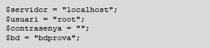
3.Realització i comprovació de la connexió¶
La connexió amb la base de dades es fa sempre a través d’una variable del programa, que és l’encarregada de realitzar la comunicació bidireccional amb el connector de MySQL.
La instrucció necessària per realitzar la connexió retorna aquesta variable, una vegada executada amb els paràmetres de connexió especificats en l’apartat anterior.
PHP: retorna una variable amb la connexió establerta, que després s’haurà de fer servir per a la resta de tasques amb la base de dades. Si la variable ($con en aquest cas) és FALS després d’haver realitzat la instrucció, és que no s’ha pogut establir la connexió.
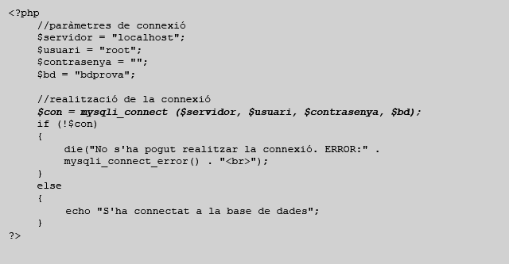 Figura 1: Codi de connexió amb la base de dades
4.Inserció, modificació i eliminació de dades¶
La instrucció per a realitzar aquestes tasques, sol ser la mateixa. El que canvia és la comanda SQL que es passa a la instrucció. Com que aquesta comanda SQL és puntual (un INSERT, un DELETE o un UPDATE) es fan sense que calgui cap més intervenció per part de l’usuari. Això és diferent en la comanda SELECT, on normalment es demanaran dades de diferents files, i caldrà que l’usuari vagi demanant les dades retornades per la comanda SQL a mesura que les vagi necessitant.
PHP: retorna una variable amb el resultat d’haver realitzat una comanda SQL. Si aquest resultat és CERT, la comanda s’ha realitzat correctament. Se li ha de passar com a paràmetres la connexió establerta anteriorment i la instrucció a realitzar.
Figura 2: codi d’inserció d’una dada. Per a executar aquest codi, primer cal realitzar la connexió amb la base de dades amb el codi de la figura 1.
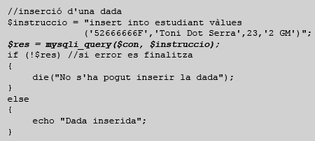
Figura 3: codi de modificació d’una dada. Per a executar aquest codi, primer cal realitzar la connexió amb la base de dades amb el codi de la figura 1.
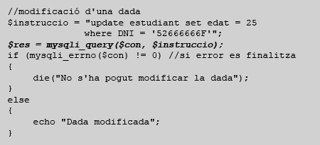
Figura 4: codi d’eliminació d’una dada. Per a executar aquest codi, primer cal realitzar la connexió amb la base de dades amb el codi de la figura 1.
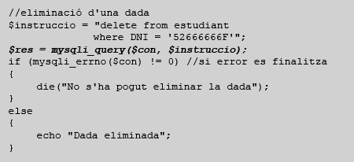
Com es pot veure, l’única diferència entre una inserció, una modificació i un esborrat és el codi de la instrucció que s’executa. Es munta primer la cadena de caràcters amb la instrucció de SQL que es vol executar, després se li passa com a paràmetre, junt amb la variable de la connexió prèviament establerta, a la instrucció mysql_query i aquesta retorna un resultat. Si el resultat és CERT, la instrucció s’ha realitzat correctament.
Aquestes tres instruccions modifiquen el contingut de la base de dades, ja sigui inserint, modificant o eliminant dades. Als exemples mostrats, si es produeix algun error en l’execució de la instrucció (que la instrucció SQL sigui sintàcticament incorrecta, per exemple) es genera un error i la instrucció no s’executa. Però en el cas que tot estigui correcte, el contingut de la base de dades serà modificat, i no es podrà desfer aquesta modificació, a menys que es faci servir el sistema de transaccions, d’aquesta manera:
Figura 5: codi d’eliminació d’una dada amb transaccions. Per a executar aquest codi, primer cal realitzar la connexió amb la base de dades amb el codi de la figura 1.
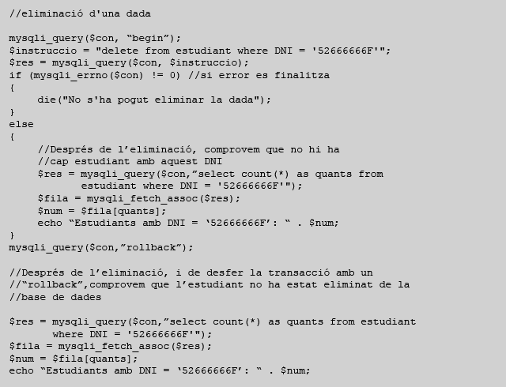
El resultat de l’execució d’aquest codi és el següent:
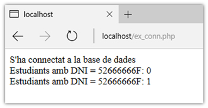
Com es pot veure, es fa la connexió a la base de dades, es fa l’eliminació de l’estudiant amb DNI 52666666F (el resultat mostra que hi ha 0 estudiants amb aquest DNI), es fa rollback, i es torna a fer una consulta del mateix estudiant. El resultat és 1, perquè el rollback desfà els canvis realitzats dintre de la transacció.
5.Consulta de dades¶
En aquest apartat aprendrem a fer una consulta a la base de dades.
5.1.Realització de la consulta¶
La instrucció per a fer una consulta a la base de dades, o sigui, executar una comanda `SELECT` de SQL, pot variar respecte a la comanda per a fer `INSERT`, `UPDATE` o `DELETE` depenent del llenguatge. En el cas de PHP, la instrucció és la mateixa en ambdós casos.
Una vegada executada la comanda SELECT, la informació demanada ja està disponible, però encara cal que el programa carregi la informació obtinguda en variables, per a realitzar el tractament corresponent (que pot ser mostrar aquestes dades a l’usuari, per exemple). Per això, una vegada realitzada la instrucció de consultar, encara queda la feina d’obtenir les dades consultades i emmagatzemar-les dintre de variables del programa en PHP per tal de ser tractades.
La unitat mínima de tractament de les dades d’una consulta és la fila o registre. Quan es realitza una consulta, aquesta pot retornar una gran quantitat de files, amb un cert nombre de camps o atributs per a cada fila. Però si hi accedim des d’un programa les dades s’hauran de tractar fila a fila.
PHP: en aquest cas, la instrucció que ha realitzat la consulta (mysqli_query) retorna un enllaç a les dades consultades. Si la consulta no s’ha pogut realitzar (per un error a la comanda SELECT, per exemple) la variable $res serà NULL.
Figura 6: codi de consulta d’una dada. Per a executar aquest codi, primer cal realitzar la connexió amb la base de dades amb el codi de la figura 1
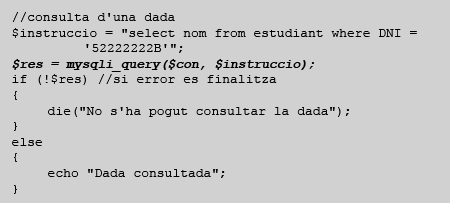
En aquest cas, el comportament de la variable $res és diferent del cas d’inserció, modificació o esborrat, ja que si la consulta s’ha pogut realitzar amb èxit, la variable $res conté un apuntador a la zona de memòria que s’haurà de consultar per a obtenir la informació.
5.2.Accés i gestió de les dades retornades per una consulta¶
Una instrucció de consulta de dades pot retornar una gran quantitat d’informació. Per a accedir a aquesta informació, cal fer-lo de forma ordenada.
Per a poder realitzar aquestes funcionalitats, es fa servir el concepte de cursor de dades. Conceptualment podem definir un cursor de dades com una variable que apunta a la zona de memòria que conté el resultat d’una consulta SQL (de tipus SELECT) i permet iterar per les diferents files els resultats d’aquesta consulta, una per una. En cada iteració s’obté les dades de la fila i es passa a la següent fila. Aquesta acció és el que s’anomena fer un fetch del cursor.
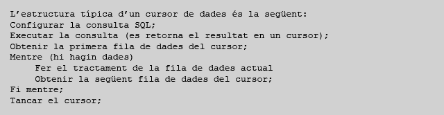
Just després d’executar la instrucció de consulta, si no s’ha produït cap error, la variable que retorna la instrucció de consulta ($res en aquest cas) juga el rol d’un cursor i apunta a la primera fila de dades retornada.
PHP: per a accedir a una fila de dades retornada per una instrucció mysqli_query (la primera o qualsevol altre fila), es fa servir la instrucció mysqli_fetch_assoc, que, a partir d’un conjunt de dades retornat per la instrucció de consulta, retorna la fila actual de dades en forma d’array associatiu. En aquest cas, es retorna un vector ($fila) amb tantes posicions com columnes hi hagi al resultat de la consulta, i per a accedir a un d’aquests resultats, només cal referenciar la posició del vector amb el nom del camp.
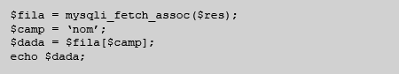
Cada vegada que es fa un mysqli_fetch_assoc, a més de retornar una fila de dades, s’avança una posició en els resultats del SELECT perquè a la següent crida a mysqli_fetch_assoc, es pugui retornar la fila adient.
Si la crida a la instrucció mysqli_fetch_assoc retorna un valor NULL, vol dir que ja no hi ha més files de dades.
Quan la consulta realitzada retorna més d’una fila de dades, cal fer el tractament de la informació fila a fila, seguint l’estructura d’un cursor de dades. Per a poder fer-ho cal programar un bucle per a anar accedint una per una a cada fila, fent a cada pas el tractament corresponent a aquella fila. Aquest bucle s’ha d’anar repetint mentre hi hagi files de dades a tractar. És molt important reconèixer aquest fet per a no programar bucles infinits, o amb errors.
PHP: per a poder fer el tractament de totes les files de dades retornades per una consulta, s’ha de programar un bucle que a cada iteració, comprovi si la fila obtinguda és o no un valor NULL. En cas que NO sigui NULL, s’accedeix als resultats, es fa el tractament corresponent (en aquest cas, el tractament consisteix a mostrar la informació per pantalla) i s’accedeix a la següent fila. Si la fila accedida resulta que és NULL, ja pot acabar el bucle, ja que no hi ha més dades retornades a la consulta.
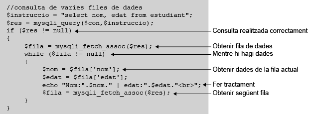
El següent diagrama mostra de forma gràfica com actuen les tres instruccions necessàries per a accedir, a partir d’una sentència SELECT, a un valor individual d’una fila de dades.
Primer s’obté el resultat de la consulta SELECT amb mysqli_query, després s’obté la fila de dades actual amb mysqli_fetch_assoc, que també avança la fila actual, i finalment s’obté la dada individual accedint a l’array associatiu mitjançant el nom del camp: $nom = $fila[‘nom’];
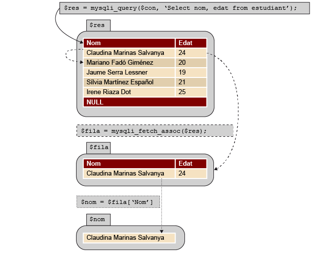
Array associatiu
Un array associatiu és un vector (Array) on l’accés als seus elements NO es fa per posició, com en els arrays comuns, sinó que es fa mitjançant un índex de text:
Array comú: vc[4] = 32;
Array Associatiu: va[‘edat’] = 32;
5.3.Finalització de la consulta¶
Quan s’ha acabat de treballar amb les dades d’una consulta, cal tancar-la per a alliberar els recursos que s’han fet servir, com per exemple, la memòria RAM per a emmagatzemar les dades.
PHP: quan finalitza un script, automàticament es tanquen les consultes obertes i s’allibera memòria. De totes maneres, hi ha una instrucció per a tancar explícitament les consultes obertes, a la que se li ha de passar el conjunt de resultats obtinguts de fer un mysqli_query:
6.Desconnexió de la base de dades¶
Una vegada acabada la feina de gestió de les dades, cal desconnectar el programa de la base de dades.
PHP: Quan finalitza un script, automàticament es tanquen les connexions establertes amb la base de dades. No obstant això, hi ha una instrucció per a tancar explícitament les connexions establertes:
7.Gestió i control d’errors i obtenció d’informació¶
PHP disposa de dues instruccions per a controlar els errors que es poden produir durant la transferència de dades des de i cap a la base de dades amb el sistema mysqli. Aquestes dues instruccions són les següents:
Retorna el codi d’error si n’hi ha algun. Retorna 0 si no s’ha produït cap error a l’execució de la darrera instrucció mysqli_query.
Retorna el text d’error de la darrera instrucció SQL executada amb mysqli_query, si és que s’ha produït un error. Per exemple:
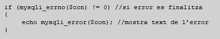
A banda, hi ha també una instrucció molt útil a l’hora de no tenir problemes amb els caràcters especials, com els accents, dièresis, etc. Aquesta instrucció és:
Estableix el conjunt de caràcters especials per a fer servir a la connexió. Per exemple:
Finalment, hi ha una instrucció que retorna el nombre de files o registres afectats per la darrera instrucció mysql_query. Aquestes files poden ser, per exemple, el nombre de files seleccionades per un SELECT, o eliminades per un DELETE:
Per exemple:
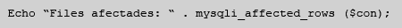
8.Consideracions generals i bones pràctiques¶
Quan s’aborda el problema de programar una gestió de dades, cal tenir en compte algunes consideracions, que tenen a veure amb la consistència de les dades. En aquest apartat indicarem com tenir en compte les restriccions d’identitat i d’integritat referencial. Si es tenen en consideració, s’evitarà cometre errors, que en alguns casos poden ser molt greus, deixant la base de dades en un estat inconsistent o eliminant dades rellevants per error.
Les restriccions d’integritat són condicions que han de complir els valors de la base de dades per a garantir que les dades representades a la base de dades componen una instància vàlida del model representat.
Exemples de restriccions d’integritat serien: l’edat d’una persona no pot ser negativa o una persona tan sols pot tenir una mare biològica.
8.1.Restricció d’identitat (claus primàries)¶
La restricció d’identitat de clau primària fa referència als valors que es poden assignar a un atribut declarat com a clau primària. Aquests valors no poden ser valor NULL, i han de ser tots diferents, o sigui, no hi pot haver repetits.
Aquestes característiques de les claus primàries comporten que cal tenir en compte una sèrie de consideracions a l’hora de realitzar diferents operacions on estiguin implicades.
1) Inserció. La consideració fonamental a l’hora de fer una inserció de dades a una base de dades és comprovar que les dades no existeixen a la base de dades. Aquí, suposant que volem inserir dades que ja es troben a la base de dades, ens podem trobar amb dos casos, en funció de si proporcionem nosaltres les claus primàries o fem que la clau primària sigui un camp autoincremental:
- Si proporcionem nosaltres la clau primària: en cas que ja hi hagi una clau primària amb el valor introduït, l’operació d’inserció acabarà amb error i no es produirà.
- Clau primària autoincremental: aquest cas és més greu, perquè com el sistema gestor de bases de dades no sap que les dades que inserim ja existeixen a la base de dades, les torna a crear amb una nova clau. El resultat és que introduirem una inconsistència en les dades, ja que tindrem el mateix objecte representat dues vegades.
Abans de fer una inserció podem comprovar que la dada no estigui ja a la base de dades. Aquesta comprovació es pot fer executant una consulta prèvia, que retorni el nombre de files que hi ha amb la mateixa clau primària (o consultant els camps que calgui) que la fila a inserir. Si aquesta consulta retorna 0 (zero), ja es pot inserir sense por de tenir un error de clau primària.
2) Eliminació. En el cas de l’eliminació d’una o més dades, no es genera cap error que tingui a veure amb la restricció d’integritat de clau primària.
3) Modificació. En realitzar una instrucció de modificació, si les dades a modificar no inclouen atributs que formin part de la clau primària, no hi ha cap problema.
En cas que es vulgui modificar el valor de la clau primària total o parcialment (en casos on les claus primàries estiguin compostes per diversos atributs) cal tenir en compte que el nou valor a modificar, no coincideixi amb el valor de la clau primària de cap altra fila de dades. Cal tenir en compte que una modificació de la clau primària es pot veure com una eliminació de la dada antiga i una inserció de la dada nova, així que s’aplica tot el que s’aplicava a inserció.
8.2.Restricció d’integritat referencial (claus foranes)¶
La restricció d’integritat referencial limita els valors que pot agafar un camp sobre el qual hi ha definida una clau forana. Aquests valors poden ser, o bé valor NULL (quan no està relacionada amb cap altra fila o no sabem amb quina fila està relacionada), o bé el valor de la clau primària referenciada.
Per exemple, en el cas que tinguem dues taules a la base de dades, una d’estudiants i l’altra de cursos, podríem definir una clau forana a la taula estudiant que ens indiqués quin curs està realitzant l’estudiant (això implicaria que un estudiant no pot fer més d’un curs a l’hora, però a efectes d’aquest exemple això no importa).
Hi ha molts conflictes que poden apareixen en fer modificacions a la base de dades amb les claus foranes. Aquí en veurem els més importants. Alguns d’aquests conflictes poden solucionar-se de diferents formes. Per exemple, suposem que tenim un estudiant, en Joan Pere Pau, que està matriculat del 3r Grau d’informàtica (per tant, té una clau forana a la fila de cursos que representa el 3r Grau d’informàtica). Suposem que arran d’una modificació a la taula de cursos es vol eliminar el 3r Grau d’informàtica. Fer aquesta eliminació sense més provocaria que la base de dades caigués en un estat inconsistent, ja que es violaria la restricció d’integritat referencial (els estudiants del 3r Grau d’informàtica tindrien un valor de clau forana inexistent a la taula de cursos). Per tal de solucionar aquesta inconsistència, el sistema gestor de base de dades té diferents opcions:
- No deixar fer l’eliminació. En aquest cas no es permetria eliminar el 3r Grau d’Informàtica de la taula de cursos.
- Deixar fer l’eliminació i posar els valors de clau forana que hi apunten a NULL. En aquest cas s’eliminaria el 3r Grau d’Informàtica de la taula de cursos i es modificaria a NULL la clau forana dels estudiants que l’estaven cursant. Per tant, es perdrà informació ja que tindrem estudiants però no tindrem constància sobre el curs que estan o estaven fent.
- Fer l’eliminació en cascada. En aquest cas, s’eliminaria el 3r Grau d’Informàtica de la taula de cursos. A més a més, s’eliminarien de la taula d’estudiants totes aquelles persones que estiguessin fent el curs de 3r Grau d’Informàtica. Així, com no hi ha ningú que apunti al curs eliminat, es garanteix que no es viola la restricció d’integritat.
Fer que el sistema gestor de base de dades utilitzi una o una altra estratègia és una decisió de disseny que el dissenyador de la base de dades haurà d’avaluar. A continuació mostrarem algunes de les violacions de les restriccions d’integritat referencial pels casos d’insercions, modificacions i esborrats a la base de dades i com poden tractar-se. També mostrarem com definir a MySQL les tres estratègies abans esmentades.
1) Inserció. A l’hora d’inserir una dada, a banda de controlar la restricció d’identitat, cal tenir en compte també si hi ha dades relacionades a la taula on es vol inserir la dada mitjançant claus foranes.
Si a la inserció hi ha un camp de la taula que és clau forana cap a la clau primària d’una altra taula, el que s’ha de fer és comprovar que aquest valor ja existeix a l’altre taula. Altrament el sistema gestor de base de dades no permetrà fer la inserció. Per exemple, si a la base de dades hi ha aquestes dues taules:
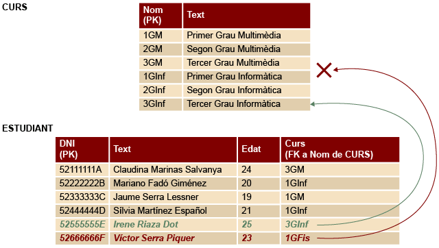
Es podria inserir “Irene Riaza Dot”, perquè el curs que fa, 3GInf, està a la clau primària de la taula de cursos. En canvi, no es podria inserir “Victor Serra Piquer” perquè vol fer un curs, 1GFis que no està a clau primària de la taula de cursos. Abans de fer la inserció, caldria comprovar aquesta situació.
2) Eliminació. En el cas de l’eliminació de dades, cal comprovar que no hi hagi cap clau forana apuntant a la fila o files que es volen eliminar. Que passa si es vol eliminar el curs 1GInf de la taula CURS? Que es fa amb els alumnes que fan aquest curs, Mariano Fadó Giménez i Sílvia Martínez Español?
Hi ha tres possibles solucions:
a) Restricció: no es pot eliminar la informació apuntada per una clau forana. Cal eliminar primer la informació relacionada. Si es vol eliminar el curs “1GInf”, es generaria un error dient que hi ha alumnes al curs i no es podrà eliminar.
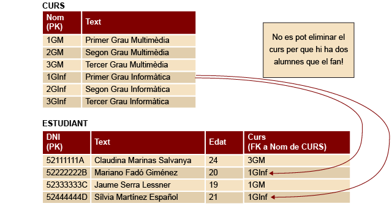
MySQL: per a indicar que una clau forana ha d’actuar de forma restrictiva quan es produeix una eliminació de dades, no cal afegir res a la instrucció, ja que és el comportament per defecte de les claus foranes a MySQL. De totes maneres, la instrucció seria:
Alter table ESTUDIANT add foreign key curs references CURS(nom) on delete restrict;
b) Posar a NULL: abans d’eliminar el curs, es modifica el curs dels dos alumnes afectats i es posa a NULL. D’aquesta manera, a la taula ESTUDIANT ja no hi és el curs “1Ginf” a eliminar. Després, s’elimina aquest curs de la taula CURS. Les dues taules de l’exemple quedarien així:
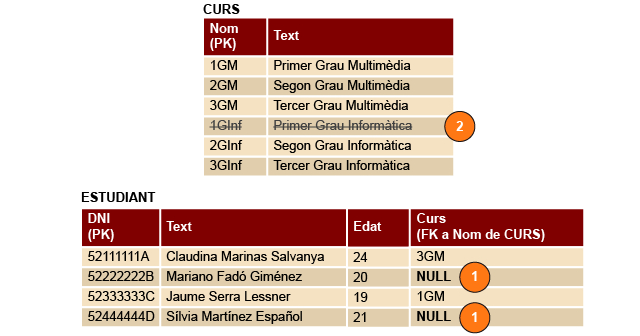
MySQL: per a indicar que una clau forana es comporti de forma “posar a NULL” quan es produeix una eliminació de dades, es fa de la següent manera:
Alter table ESTUDIANT add foreign key curs references CURS(nom) on delete set null;
c) Cascada: l’eliminació en cascada s’ha de definir per a cada relació entre taules que volem que s’apliqui. És perillosa, ja que elimina més dades de les que en un principi es veurien afectades per la instrucció que s’executa. Aquest sistema consisteix a eliminar primer de la taula relacionada (ESTUDIANT en aquest cas), tots els registres que poden donar un problema d’integritat referencial (el segon i el quart, en aquest cas), i després fer l’eliminació demanada a la primera taula (CURS en aquest cas). Les dues taules quedarien així:
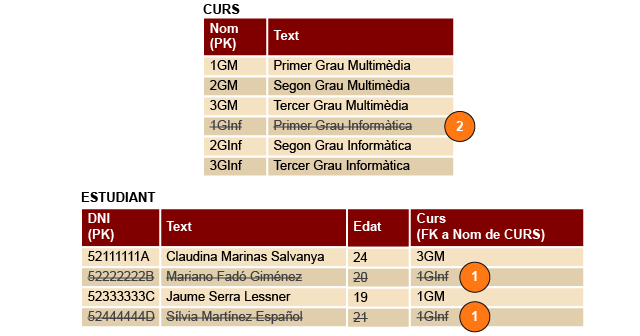
MySQL: per a indicar que una clau forana elimini dades en cascada en fer una eliminació de dades, es fa de la següent manera:
Alter table ESTUDIANT add foreign key curs references CURS(nom) on delete cascade;
3) Modificació: com ja s’ha vist amb anterioritat, una modificació es pot equiparar a una eliminació de les dades velles, i una inserció de les dades noves. Llavors, cal tenir en compte aquests dos fets, pel que fa a evitat errors d’integritat referencial.
El valor que es vol modificar, si està referenciat per una clau forana, se li apliquen les mateixes regles que en el cas de l’eliminació, o sigui: restricció, posar a NULL o cascada. Això és així perquè a tots els efectes, el valor a modificar es perdrà, sobreescrit pel nou valor, i això pot afectar els valors referenciats.
A l’exemple anterior, si a la taula CURS es vol canviar el nom del curs “3GM” per “3GMul”, afectarà l’estudiant Claudina Marinas Salvanya, que està fent un curs anomenat 3GM.
De la mateixa manera, si es vol modificar el valor d’un atribut que és clau forana cap a una altra taula, es pot fer, sempre que es continuïn complint les regles d’integritat, referencial, o sigui, que el nou valor sigui NULL, o bé un altre valor de la clau primària referenciada. Per exemple, Jaume Serra Lessner vol canviar-se de curs. Té clar que no vol fer “1GM”. Hi ha tres possibilitats:
- No té clar quin nou curs vol fer. S’ho pensa. Per ara, el valor del curs que fa és NULL, que és un valor vàlid per a una clau forana.
- Té clar què vol fer “1GInf”. Es pot canviar el valor sense cap problema, perquè és un dels valors de la clau primària de CURS.
- Té clar què vol fer “Astrofísica Aplicada”. Doncs no ho pot fer, perquè no és un dels valors de la clau primària de CURS. Si es fes una modificació amb aquest valor, es generaria un error d’integritat referencial.
MySQL. Per a indicar com es vol que reaccioni la taula en modificar un valor d’una clau forana, la sintaxi és molt similar al cas de l’eliminació de dades:
- Restrictiu:
Alter table ESTUDIANT add foreign key curs references CURS(nom) on update restrict; - Posar a NULL:
Alter table ESTUDIANT add foreign key curs references CURS(nom) on update set null; - Cascada:
Alter table ESTUDIANT add foreign key curs references CURS(nom) on update cascade;
A una mateixa clau forana es poden combinar les accions pel cas de l’eliminació i pel cas de la modificació. No cal fer dues instruccions, només cal concatenar:
Alter table ESTUDIANT add foreign key curs references CURS(nom) on delete set null on update cascade;
9.Annex: codi emprat als exemples¶
1) Codi de connexió, inserció, modificació, eliminació, consulta d’una dada i consulta de diverses dades amb un cursor.
<?php
//paràmetres de connexió
$servidor = "localhost";
$usuari = "root";
$contrasenya = "";
$bd = "bdprova";
//realització de la connexió
$con = mysqli_connect ($servidor, $usuari, $contrasenya, $bd);
if (!$con)
{
die("No s'ha pogut realitzar la connexió. ERROR:" .
mysqli_connect_error() . "<br>");
}
//inserció d'una dada
$instruccio = "insert into estudiant
values ('52666666F','Toni Blanco Serra',23,'2GM')";
$res = mysqli_query($con, $instruccio);
if (mysqli_errno($con) != 0) //si error es finalitza
{
die("No s'ha pogut inserir la dada<br>");
}
echo "Dada inserida<br>";
//modificació d'una dada
$instruccio = "update estudiant set edat = 25
where DNI = '52666666F'";
$res = mysqli_query($con, $instruccio);
if (mysqli_errno($con) != 0) //si error es finalitza
{
die("No s'ha pogut modificar la dada<br>");
}
echo "Dada modificada<br>";
//eliminació d'una dada
$instruccio = "delete from estudiant where DNI = '52666666F'";
$res = mysqli_query($con, $instruccio);
if (mysqli_errno($con) != 0) //si error es finalitza
{
die("No s'ha pogut eliminar la dada<br>");
}
echo "Dada eliminada<br>";
//consulta d'una dada simple
$instruccio = "select nom from estudiant where dni = '52222222B'";
$res = mysqli_query($con,$instruccio);
if (mysqli_errno($con) != 0) //si error es finalitza
{
die("No s'ha pogut consultar la dada<br>");
}
echo "Dada consultada<br>";
$fila = mysqli_fetch_assoc($res);
$camp = 'nom';
$dada = $fila['nom'];
echo $dada . "<br>";
//consulta de varies files de dades
$instruccio = "select nom, edat from estudiant";
$res = mysqli_query($con,$instruccio);
if ($res != null)
{
$fila = mysqli_fetch_assoc($res);
while ($fila != null)
{
$nom = $fila['nom'];
$edat = $fila['edat'];
echo "Nom: " . $nom . " | edat: " . $edat . "<br>";
$fila = mysqli_fetch_assoc($res);
}
}
mysqli_free_result($res);
mysqli_close ($con);
?>
Codi d’eliminació d’una dada dintre d’una transacció, i posterior rollback per a desfer la transacció.
<?php
//paràmetres de connexió
$servidor = "localhost";
$usuari = "root";
$contrasenya = "";
$bd = "bdprova";
//realització de la connexió
$con = mysqli_connect ($servidor, $usuari, $contrasenya, $bd);
if (!$con)
{
die("No s'ha pogut realitzar la connexió. ERROR:" .
mysqli_connect_error() . "<br>");
}
else
{
echo "S'ha connectat a la base de dades<br>";
//eliminació d'una dada
mysqli_query($con, "begin");
$instruccio = "delete from estudiant where
DNI = '52666666F'";
$res = mysqli_query($con, $instruccio);
if (mysqli_errno($con) != 0) //si error es finalitza
{
die("No s'ha pogut eliminar la dada");
}
else
{
//Després de l'eliminació, comprovem que no hi ha cap
//estudiant amb aquest DNI
$res = mysqli_query($con,"select count(*) as quants
from estudiant where DNI = '52666666F'");
$fila = mysqli_fetch_assoc($res);
$num = $fila['quants'];
echo "Estudiants amb DNI = 52666666F: " . $num . "<br>";
}
mysqli_query($con,"rollback");
//Després de l'eliminació, i de desfer la transacció amb un
//"rollback",comprovem que l'estudiant no ha estat eliminat
//de la base de dades
$res = mysqli_query($con,"select count(*) as quants from
estudiant where DNI = '52666666F'");
$fila = mysqli_fetch_assoc($res);
$num = $fila['quants'];
echo "Estudiants amb DNI = 52666666F: " . $num . "<br>";
}
?>
10.Manuals i fonts d’informació addicionals¶
1) MySQL:
- https://dev.mysql.com/doc/refman/8.0/en/sql-syntax.html
- https://downloads.mysql.com/docs/refman-5.0-es.pdf
2) PHP i MySQL: